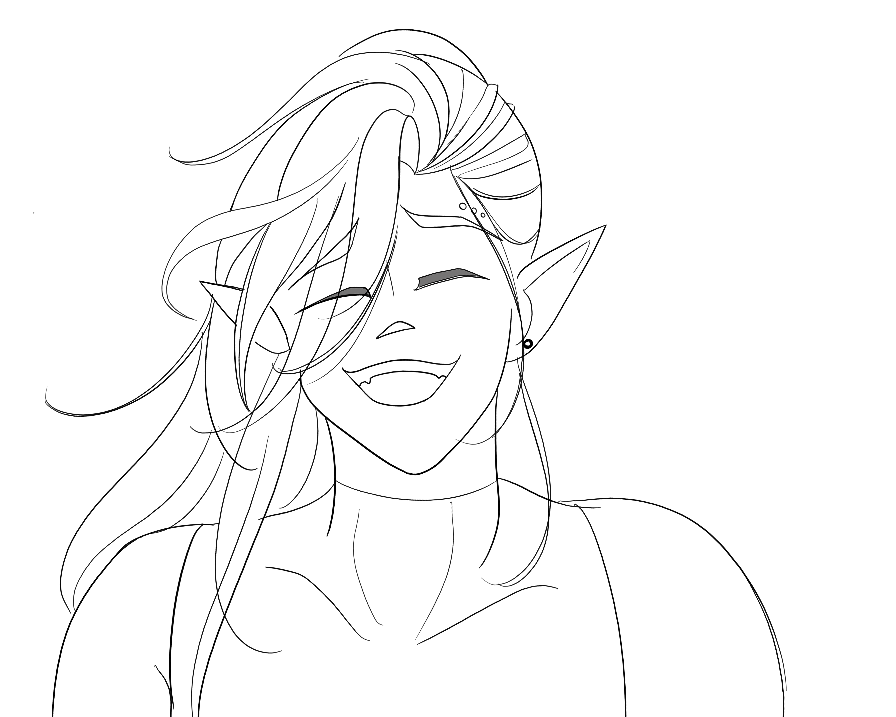

'You can't do much for him anyway,' you reconcile after deciding that he'd get in your way. You may have been too quick to move
on as your supplies are shifting awkwardly in your pouch. At a satisfactory distance, you pause to resettle your packs. As you
hand brushes against the bolbaena, you get an intrusive thought of Ulf'ren picking up the blooms but quickly dismiss the imagery.
That ill feeling beings to creep in again. You don't have time to get sick; you normally don't and this onset is enough of a
distraction. You contemplate possible remedies on your way home.
You manage to get home with most of the ill feelings subsiding. It's a bit of a relief but you are still going to make a remedy
just in case. You come to the cliff side where the blood hunters train. Through a few flights of stairs and moon doors, you come
onto the landing where the entrance lies in an open courtyard. Everything as it should be as you make a basic bitter tincture
that settles your stomach. Despite the unpleasant taste, it's familiar. This calms you.
You rest well but not deeply, thankfully trancing allows you to rest completely. Since you don't allow yourself to dream often,
you lucidly work through plans for your waking hours.
You awaken to the usual chatter around the barracks. Some of your fellow trainees have become extremely lax with the freedom granted by the most recent mission to
collect materials for the rite, while others are more focused than ever. This makes sense, it could very well be the last chance that someone has to bow out. Some of
the sacrifice that you all participated in for the craft can't be undone and they will always be seen as “other”, but they could choose to leave. Whereas the most
ambitious of you who would survive the final covenant in the valley would be able to move from this village.
You think about it a little longer, knowing that you'll be different in the end, you don't really know what that means. You'll need to complete a pact with one of the
werebeasts in the valley but in doing so, will you remain whole? You'll have the ability to transform and remain in control, but what is the real cost?
You dismiss that final thought, because no matter the cost, it is worth achieving your goal. You collect yourself and your things, then head out into courtyard. There, you instantly lock into a familiar pair of blue eyes. 'At least it looks like the redness and swelling went down', you think to yourself as Ulf'ren waves and barrels right towards you. You don't wave back.

“Fancy seeing you here!”
'I'm always here', you don't say aloud but continue your walk down the cliffside. He walks alongside you quietly until you reach the edge of the forest.
“Hey, so I was able to get a few more blooms after you left, it made up for some of the damaged ones. I was thinking about going back to that spot again. Since you're here, we can maybe… go together this time?”
You finally stop and take him in. It's probably the first time you notice he's almost always smiling. He's probably used to people ignoring him or making fun of how rants about his interests, but he still smiles.
You think you found it annoying before; you're surprised you even paid this much attention. When did you start noticing? You dismiss the thought and reconsider the options… What can you offer him in return?